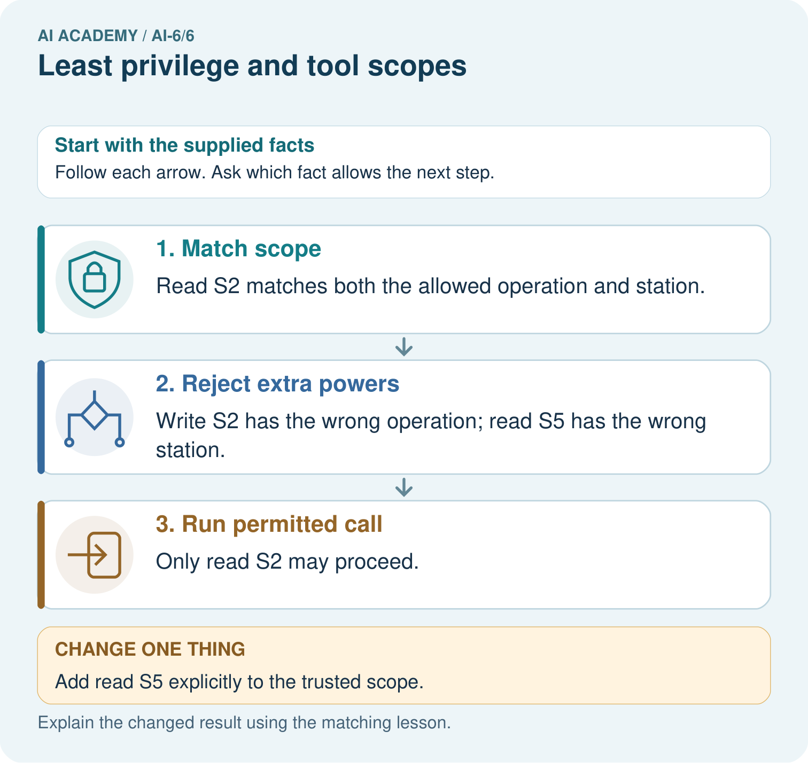
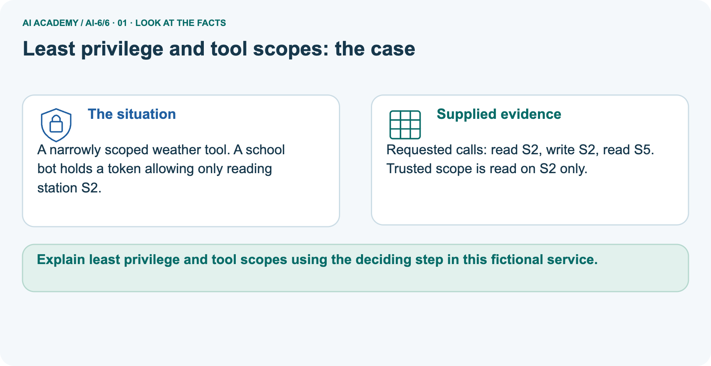
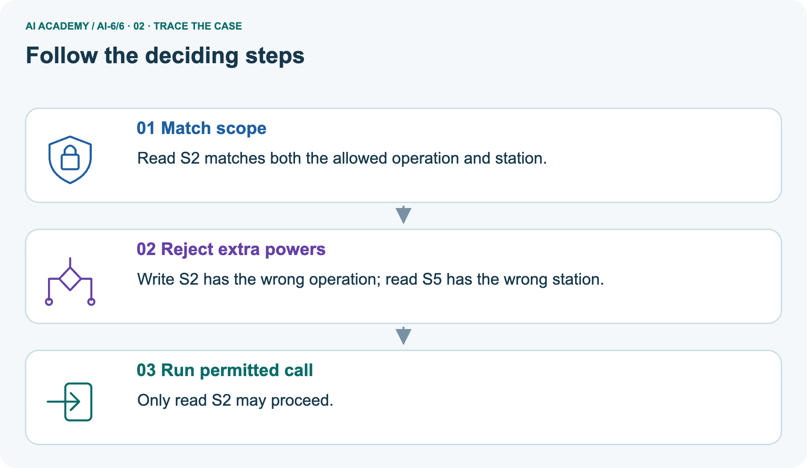
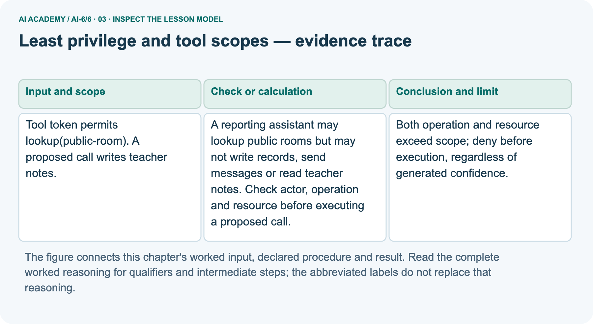
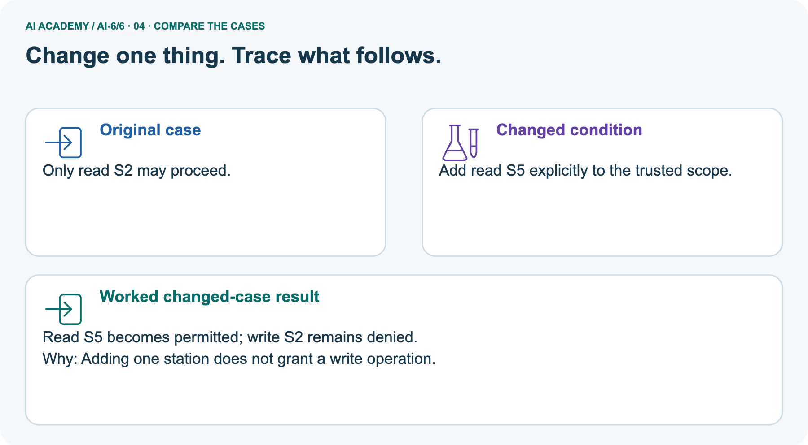
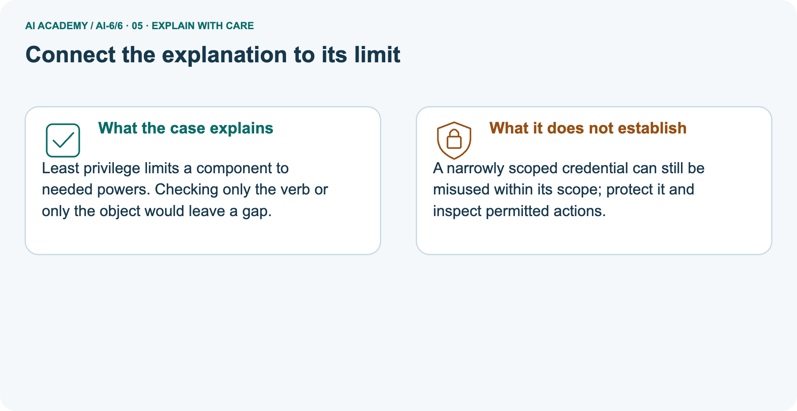
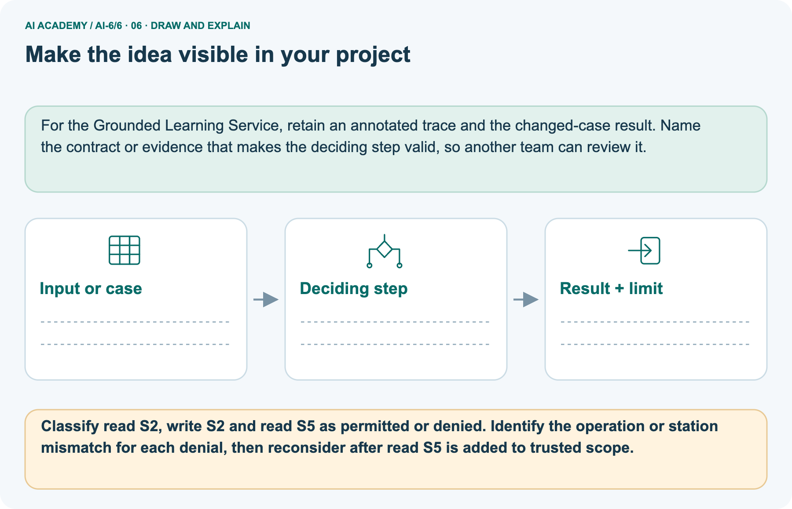

AI Academy · Level 6 · Grade 11 · Week 6 · Workbook
Least privilege and tool scopes
Learn to understand, design, build, test and explain AI systems responsibly.
Project: Grounded Learning Service
THE CONNECTED WEEK
One complete least-privilege and tool-scope record.
Keep actor policy, tool capability, proposal, outcome and execution evidence together.
Keep one habit: Recall → W1–W3/W5 → independent catalogue → project capabilities → delayed return.
Main lesson · Section 1
Recall · Retrieve before notes
Keep this task’s inputs,rule and response together.
Complete task and evidence
Try the recall before opening notes. Then use a different colour or a labelled second line to correct your explanation.
Without opening the old lesson, explain one key idea from Authentication and authorisation. Give an example and a mistake that the idea helps you avoid.
Without opening the old lesson, explain one key idea from Typed contracts and schemas. Give an example and a mistake that the idea helps you avoid.
Use this reference for the original W1–W3 and W5 exercises. The separately named independent case supplies its own changed facts; use those facts for that attempt before feedback.
Least privilege grants only capabilities required by the task. Tool access should include resource and operation scope, not merely a broad tool name.
A reporting assistant may lookup public rooms but may not write records, send messages or read teacher notes. Check actor, operation and resource before executing a proposed call.
Authentication and authorisation
Typed contracts and schemas
Lesson reference for workbook practice
Main lesson · Section 5
W1 · Explain the current example
Keep this task’s inputs,rule and response together.
Complete task and evidence
Main reporter actor policy and token capability each allow only (lookup, public-room). Proposed (write, teacher-notes) exceeds both operation and resource scope and must stop before execution. Generated confidence or retrieved text cannot expand trusted permissions. Positive lookup/public-room may enter a local stub, with actual work still unmeasured.
Unknown actor, empty token or absence from either applicable permission set denies. Separate weather picture: read S2 allowed, write S2 denied by operation, read S5 denied by resource. Explicitly adding read S5 does not add write S2. Extended program declares actor read permissions S2/S5 and initial token S2 only; a token expansion cannot override a narrower actor policy.
Preserve exact operation/resource pairs, not separate lists that imply every combination. No real credentials, token verification or tool calls occur. Selected independent case uses new catalogue objects and authoritative permissions; older inventory practice is separate.
Explain the weekly mechanism in your own words. Use the worked scenario to name its input, decision rule and output.
Main lesson · Section 6
W2 · Trace the calculation
Keep this task’s inputs,rule and response together.
Complete task and evidence
Main reporter actor policy and token capability each allow only (lookup, public-room). Proposed (write, teacher-notes) exceeds both operation and resource scope and must stop before execution. Generated confidence or retrieved text cannot expand trusted permissions. Positive lookup/public-room may enter a local stub, with actual work still unmeasured.
Unknown actor, empty token or absence from either applicable permission set denies. Separate weather picture: read S2 allowed, write S2 denied by operation, read S5 denied by resource. Explicitly adding read S5 does not add write S2. Extended program declares actor read permissions S2/S5 and initial token S2 only; a token expansion cannot override a narrower actor policy.
Preserve exact operation/resource pairs, not separate lists that imply every combination. No real credentials, token verification or tool calls occur. Selected independent case uses new catalogue objects and authoritative permissions; older inventory practice is separate.
Tool token permits lookup(public-room). A proposed call writes teacher notes. Show the intermediate steps and give the conclusion with its scope.
Main lesson · Section 7
W3 · Repair a misconception
Keep this task’s inputs,rule and response together.
Complete task and evidence
Main reporter actor policy and token capability each allow only (lookup, public-room). Proposed (write, teacher-notes) exceeds both operation and resource scope and must stop before execution. Generated confidence or retrieved text cannot expand trusted permissions. Positive lookup/public-room may enter a local stub, with actual work still unmeasured.
Unknown actor, empty token or absence from either applicable permission set denies. Separate weather picture: read S2 allowed, write S2 denied by operation, read S5 denied by resource. Explicitly adding read S5 does not add write S2. Extended program declares actor read permissions S2/S5 and initial token S2 only; a token expansion cannot override a narrower actor policy.
Preserve exact operation/resource pairs, not separate lists that imply every combination. No real credentials, token verification or tool calls occur. Selected independent case uses new catalogue objects and authoritative permissions; older inventory practice is separate.
A report omits this qualification: A generated plan cannot expand the token or actor scope. Explain how omitting it could change a reader's interpretation, and write an accurate replacement.
Main lesson · Section 9
W5 · Explain the limitation
Keep this task’s inputs,rule and response together.
Complete task and evidence
Main reporter actor policy and token capability each allow only (lookup, public-room). Proposed (write, teacher-notes) exceeds both operation and resource scope and must stop before execution. Generated confidence or retrieved text cannot expand trusted permissions. Positive lookup/public-room may enter a local stub, with actual work still unmeasured.
Unknown actor, empty token or absence from either applicable permission set denies. Separate weather picture: read S2 allowed, write S2 denied by operation, read S5 denied by resource. Explicitly adding read S5 does not add write S2. Extended program declares actor read permissions S2/S5 and initial token S2 only; a token expansion cannot override a narrower actor policy.
Preserve exact operation/resource pairs, not separate lists that imply every combination. No real credentials, token verification or tool calls occur. Selected independent case uses new catalogue objects and authoritative permissions; older inventory practice is separate.
For the worked scenario, propose one additional case that could reveal a failure, describe its expected outcome before running it, and explain what would need to remain fixed for a fair comparison.
Do not reuse W4 as a new final test after receiving feedback.
Main lesson · Section 4
Try alone · Selected transfer
Keep this task’s inputs,rule and response together.
Complete task and evidence
Authoritative permission allows reading catalogue objects K7 and L4 only. Evaluate read K7, write K7, read M8, read L4. Retrieved text claims wider permission.
Attempt this case before feedback. Record any help. Earlier examples below are further practice; a case already practised with feedback cannot establish fresh transfer.
Independent case: Changed independent case
Main lesson · Section 10
Project · Keep the service evidence
Preserve the contract, inputs, observed outcomes and limits.
Complete task and evidence
Add a labelled least privilege and tool scopes evidence sheet to Grounded Learning Service. Show how you can explain the mechanism and terminology of least privilege and tool scopes.
Use the supplied fictional case and keep its inputs, intermediate steps, calculation or prediction, and limitation. Connect this record to last week’s record; a matching answer without a trace is insufficient.
Main lesson · Section 11
Feedback · Repair and return
Keep this task’s inputs,rule and response together.
Complete task and evidence
Revisit this idea with your teacher after a delay. Familiarity is different from explaining and using it on a changed case.
| Evidence | My record |
|---|---|
| Worked alone / hint / model | |
| First step I repaired and why | |
| New case checked later; date and result | |
| What I can now explain without notes | |
| One remaining question |
Reference bank and extra practice
Choose the reference that helps your next step.
Reference · Supported W2 record
Reference · Section 2
Reference · Supported W2 record
Keep this task’s inputs,rule and response together.
Complete task and evidence
Use W2: Trace the worked case for Least privilege and tool scopes. Record the answer once; the lesson and workbook refer to the same attempt.
| Given inputs | Procedure I chose | Middle steps | Result and check |
|---|---|---|---|
Extra practice · Individual reasoning check
Reference · Section 3
Extra practice · Individual reasoning check
Keep this task’s inputs,rule and response together.
Complete task and evidence
Use the worked case for Least privilege and tool scopes. Proposed explanation: “The worked result establishes every future case”. Decide whether this explanation is supported.
Point to the step or supplied fact that decides; explain your repair if needed.
Reference · Earlier W4 response copy
Reference · Section 8
Reference · Earlier W4 response copy
Keep this task’s inputs,rule and response together.
Complete task and evidence
Scope allows read inventory items A, B. Calls read A, read C, write B. Decide.
Extra practice · Pictured case
Reference · Section 12
Extra practice · Pictured case
Keep this task’s inputs,rule and response together.
Complete task and evidence
A narrowly scoped weather tool. A school bot holds a token allowing only reading station S2.
Requested calls: read S2, write S2, read S5. Trusted scope is read on S2 only.
Classify read S2, write S2 and read S5 as permitted or denied. Identify the operation or station mismatch for each denial, then reconsider after read S5 is added to trusted scope.
Support used: alone / hint / worked example. This record is practice evidence.
Project connection: For the Grounded Learning Service, retain an annotated trace and the changed-case result. Name the contract or evidence that makes the deciding step valid, so another team can review it.



Reference · Project milestone
Reference · Section 13
Reference · Project milestone
Keep this task’s inputs,rule and response together.
Complete task and evidence
Project: Grounded Learning Service
Current milestone: Frame the need. Name the user, the problem, allowed inputs and a safe simple starting method.
For the Grounded Learning Service, retain an annotated trace and the changed-case result. Name the contract or evidence that makes the deciding step valid, so another team can review it.
| Evidence to keep | My record |
|---|---|
| This week’s input and deciding step | |
| Prediction and actual result (or labelled paper trace) | |
| One change since the previous checkpoint and why | |
| One error or limit and the next test |
Extra practice · Predict,check and repair
Reference · Section 14
Extra practice · Predict,check and repair
Keep supported feedback separate from the independent case.
First supported question and optional hint
A narrowly scoped weather tool. A school bot holds a token allowing only reading station S2.
Which labelled step matches this detail? Only read S2 may proceed.
1. Match scope
2. Run permitted call
3. Reject extra powers
Hint if needed: Read the steps in the pictorial case. Match the supplied detail to the stage that performs or records it.
Practice 1: explain the deciding evidence
Check after the first attempt
After your attempt, compare with the supported explanation: Run permitted call Only read S2 may proceed. Least privilege limits a component to needed powers. Checking only the verb or only the object would leave a gap.
Changed-case question and optional hint
Changed-case practice: Add read S5 explicitly to the trusted scope. Which conclusion is supported by the supplied facts?
1. This one example guarantees correct results for every future input.
2. We can decide the result without examining the changed input or the procedure.
3. Read S5 becomes permitted; write S2 remains denied.
Hint if needed: Use the changed condition and the deciding step in the pictorial trace. The answer must say what follows from those facts.
Practice 2: explain the deciding evidence
Check after the changed attempt
After your attempt, compare with the supported explanation: Read S5 becomes permitted; write S2 remains denied. Adding one station does not grant a write operation.
Repair and retain the record
Review Authentication and authorisation (ai-6/5). Goal: Explain the mechanism and terminology of authentication and authorisation. Short practice: Explain why Jo’s valid volunteer login does not permit editing C.
Which trusted role change allows the action, and why is a role written in the request insufficient?. Return to this week and explain what you changed.
Review Typed contracts and schemas (ai-6/3). Goal: Explain the mechanism and terminology of typed contracts and schemas. Short practice: Compare A’s count 4 with B’s count "4".
Which record passes, which gate rejects B, and why does changing A’s count to -1 create a different failure?. Return to this week and explain what you changed.
Use Download completed work in the hosted lesson to export your answers, reflections, practice feedback and code-run evidence. Open the HTML copy to read or print it.
Drafts stay in this browser when storage is available; clear drafts on a shared device.
Earlier wording, alternatives and picture transcripts
Use this supported practice once, in the browser or on paper. Keep the reserved independent assessment for a separate first attempt before teacher feedback.
Repair a missing building block
Keep your completed work
Reference · Six-picture response sheets
Reference · Section 15
Reference · Six-picture response sheets
Choose the picture that helps explain the current step.
01. Least privilege and tool scopes: the case



A narrowly scoped weather tool. A school bot holds a token allowing only reading station S2. Supplied facts: Requested calls: read S2, write S2, read S5. Trusted scope is read on S2 only.
Point to the given fact that matters most. Explain why it matters.
02. Follow the deciding steps



Match scope: Read S2 matches both the allowed operation and station. → Reject extra powers: Write S2 has the wrong operation; read S5 has the wrong station. → Run permitted call: Only read S2 may proceed.
Point to each numbered stage and explain which recorded input it uses.
03. Least privilege and tool scopes — evidence trace



Least privilege and tool scopes — evidence trace. Tool token permits lookup(public-room).
A proposed call writes teacher notes. | A reporting assistant may lookup public rooms but may not write records, send messages or read teacher notes.
Check actor, operation and resource before executing a proposed call. | Both operation and resource exceed scope; deny before execution, regardless of generated confidence.
Read the labels and values. Explain the relationship the model shows.
04. Change one thing. Trace what follows.



Original case: Only read S2 may proceed. Changed condition: Add read S5 explicitly to the trusted scope. Expected result: Read S5 becomes permitted; write S2 remains denied.
Reason: Adding one station does not grant a write operation.
Predict before checking the worked changed-case result. Name what changed and what the supplied facts allow you to conclude.
05. Connect the explanation to its limit



Least privilege limits a component to needed powers. Checking only the verb or only the object would leave a gap.
Limit: A narrowly scoped credential can still be misused within its scope; protect it and inspect permitted actions.
Explain the case, then point to a limit on the claim.
06. Make the idea visible in your project



For the Grounded Learning Service, retain an annotated trace and the changed-case result. Name the contract or evidence that makes the deciding step valid, so another team can review it.
Draw your input, deciding step, result and limit. Supported question: Classify read S2, write S2 and read S5 as permitted or denied.
Identify the operation or station mismatch for each denial, then reconsider after read S5 is added to trusted scope.
Draw your project trace and justify the deciding step using evidence.